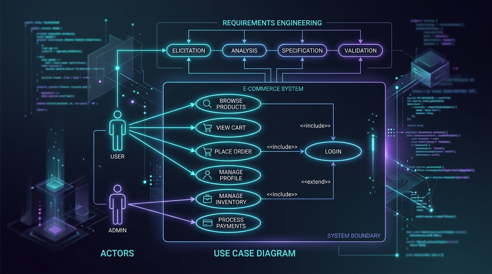

Casos de uso
Modelado UML de la interacción actor-sistema. Actores, relaciones Include/Extend, especificación formal y casos de estudio interactivos.
1. ¿Qué es un Caso de Uso?
Definición conceptual según los estándares de la cátedra de UTN.BA.

Modelando la Interacción
Cómo se comunican los actores con el sistema para lograr sus metas.
Un Caso de Uso es la descripción de un conjunto de secuencias de acciones o pasos, y sus variantes, que realiza un sistema para obtener un **resultado de valor** para el actor vinculado.
Es decir, especifican el comportamiento deseado de un sistema desde el punto de vista del usuario, utilizando un lenguaje informal pero estructurado.
- Es iniciado por un elemento externo al sistema (el Actor).
- Debe proporcionar un resultado observable de valor para el actor.
- Se utiliza principalmente en la etapa de Análisis de Requisitos para documentar y contratar el alcance del sistema.
2. Actores y roles
El elemento externo clave que da inicio al flujo del sistema.
Un actor no es una persona específica, sino un **rol** o papel que interactúa con el sistema.
También pueden ser otros sistemas de información, bases de datos o dispositivos físicos.
Una misma persona física puede ejecutar múltiples roles (ej: ser Cliente y también Administrador).
3. Tipos de relaciones entre casos de uso
Cómo se conectan y reutilizan los fragmentos de comportamiento del sistema.
Relación de Inclusión
El Caso de Uso base **incorpora obligatoriamente** el comportamiento del Caso de Uso incluido. Cada vez que se ejecuta el base, se ejecuta sí o sí el incluido. Se usa para **reutilizar** comportamiento común en varios casos de uso.
Relación de Extensión
El Caso de Uso base **incorpora de manera condicional u opcional** el comportamiento del Caso de Uso extendido. Solo ocurre si se cumple una condición específica.
4. Plantilla de especificación de casos de uso
Estructura estricta para documentar el comportamiento.
Un diagrama de Casos de Uso no es suficiente; debe complementarse con una **especificación narrativa** estructurada en formato de tabla (Curso Normal y Cursos Alternativos/Excepciones).
| Campo | Descripción |
|---|---|
| Caso de Uso | Nombre descriptivo con verbo en infinitivo + sustantivo (UML 2.0). |
| Actor | Rol que inicia la interacción. |
| Precondición | Estado inicial del sistema antes de comenzar (ej: "Usuario autenticado"). |
| Curso Normal / Básico | Flujo feliz de pasos numerados entre el Actor y el Sistema (guión bidireccional). |
| Curso Alternativo / Excepciones | Caminos de error o variantes del flujo numerados de forma asociada (ej: 3.1). |
| Postcondición | Estado final del sistema al culminar el flujo exitosamente. |
5. Caso de Estudio: Cajero Automático
El ejemplo clásico del apunte oficial modelado de manera interactiva.
Diagrama de Casos de Uso (UML)
Especificación: Autenticar usuario
| Curso Normal / Básico | Curso Alternativo / Excepciones |
|---|---|
| 1) El sistema solicita la clave de acceso. | |
| 2) El usuario ingresa su clave de acceso. | |
| 3) El sistema verifica que la clave ingresada sea correcta. | 3.1) El sistema verifica que la clave es incorrecta. 3.2) El sistema informa el error de autenticación. 3.3) El flujo continúa en el paso 1. |
| 4) El sistema muestra el menú principal de operaciones. |
- Interacciones físicas: No escribir "El usuario ingresa la tarjeta". Esto es una interacción de hardware, el software solo recibe el evento. El primer paso del sistema de software es solicitar la clave.
- Inclusiones: Al especificar un caso de uso que incluye a otro (ej: Realizar Retiro), el paso 1 del curso normal debe decir explícitamente: "Se ejecuta con éxito el caso de uso Autenticar usuario".
6. Diálogo Teatral: "Acceso Denegado... por ahora"
Un concepto pedagógico para entender la interacción bidireccional como una obra de teatro.
(Ambiente silencioso, luz tenue. Pantalla de inicio parpadeando)
7. Laboratorio: ¿Include o Extend?
Prueba tu capacidad para clasificar la relación correcta entre estos casos de uso.
Trivia de autoevaluación
Preguntas clave del apunte oficial para afianzar tus conocimientos antes del parcial.
Materiales de apoyo
Accede a los PDFs oficiales y plantillas de casos de uso cargados en el repositorio.